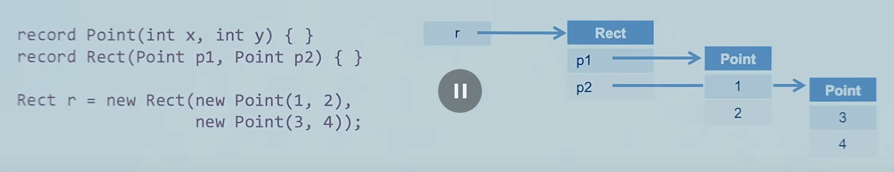
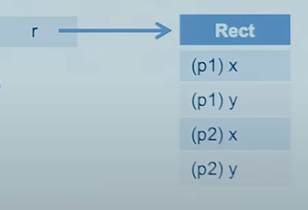

# Projets JDK - Amber - Valhalla - Leyden - Loom - Lilliput - Panama - Babylon - ... --- ## Projet Amber Son objectif est d'explorer et d'incuber des fonctionnalités Java plus petites, axées sur la productivité du développeur, <br> avec moins de verbosité, une modélisation de données claire (records, sealed) et une logique de contrôle sûre et expressive (switch, patterns) --- ## fonctionnalités disponibles - Local-Variable Type Inference (var) — JEP 286 (Java 10) - Local-Variable Syntax for Lambda Parameters — JEP 323 (Java 11) - Switch Expressions — JEP 361 (Java 14) - Text Blocks — JEP 378 (Java 15) - Pattern Matching for instanceof — JEP 394 (Java 16) - Records — JEP 395 (Java 16) - Sealed Classes — JEP 409 (Java 17) - Record Patterns — 440 (Java 21) - Pattern Matching for switch — JEP 441 (Java 21) - Unnamed Variables and Patterns — JEP 456 (Java 22) - Launch Multi-File Source-Code Programs — JEP 458 (Java 22) --- ## fonctionnalités en cours de développement - Primitive Types in Patterns, instanceof, and switch — JEP 507 (third Preview - Java 25) - Derived Record Creation — JEP 468 (Preview) - Module Import Declarations — JEP 511 (finalizing) - Compact Source Files and Instance Main Methods — JEP 512 (finalizing) - Flexible Constructor Bodies — JEP 513 (finalizing) --- ## Local-Variable Type Inference (var) ### JEP 286 (Java 10) Améliorez le langage Java pour étendre l’inférence de type aux déclarations de variables locales avec des initialiseurs. --- **Avant Amber:** ```java List<String> list = List.of("a", "b"); List<String> list = new ArrayList<>(); ``` **Avec Amber:** ```java var list = List.of("a", "b"); var list = new ArrayList<String>(); ``` --- ## Local-Variable Syntax for Lambda Parameters ### JEP 323 (Java 11) Autoriser l'utilisation de var lors de la déclaration des paramètres formels des expressions lambda implicitement typées. --- **Avant Amber:** ```java // types explicites BiFunction<String, String, String> concat = (String s1, String s2) -> s1 + s2; // types implicites (inférés) BiFunction<String, String, String> concat2 = (s1, s2) -> s1 + s2; ``` **Avec Amber:** ```java // Maintenant possible : utiliser var pour tous les paramètres BiFunction<String, String, String> concat = (var s1, var s2) -> s1 + s2; // L'avantage principal : pouvoir ajouter des annotations BiFunction<String, String, String> concat2 = (@NonNull var s1, @Nullable var s2) -> s1 + (s2 != null ? s2 : ""); ``` --- ## Switch Expressions ### JEP 361 (Java 14) Étendre switch afin qu'il puisse être utilisé comme instruction ou expression. Les 2 formes pouvant utiliser les definitions de case <br> (case: ... : label ou case ... -> label) Il y a aussi une nouvelle instruction pour retourner une valeur avec une expression (yield) --- **Avant Amber: (instruction)** ```java int days; switch (month) { case JAN: case MAR: case MAY: days = 31; break; case APR: days = 30; break; default: days = 28; break; } ``` --- **Avec Amber: (expression)** ```java int days = switch (month) { case JAN, MAR, MAY -> 31; case APR -> 30; default -> 28; }; ``` ```java int days = switch (month) { case JAN: case MAR: case MAY: yield 31; case APR: yield 30; default: yield 28; }; ``` --- ## Text Blocks ### JEP 378 (Java 15) Ajoutez des blocs de texte au langage Java. <br> Un bloc de texte est une chaîne littérale multiligne qui évite la plupart des séquences d'échappement, <br> formate automatiquement la chaîne de manière prévisible et permet au développeur de contrôler le formatage lorsqu'il le souhaite. --- **Avant Amber:** ```java String json = "{\n" + " \"name\": \"Amber\",\n" + " \"active\": true\n" + "}"; ``` **Avec Amber:** ```java String json = """ { "name": "Amber", "active": true } """; ``` --- ## Pattern Matching for instanceof ### JEP 394 (Java 16) Ajout du pattern matching pour instanceof. <br> Le pattern matching permet d'exprimer la logique courante d'un programme, <br> notamment l'extraction conditionnelle de composants à partir d'objets, de manière plus concise et plus sûre. --- **Avant Amber:** ```java if (o instanceof String) { String s = (String) o; System.out.println(s.length()); } ``` **Avec Amber:** ```java if (o instanceof String s) { System.out.println(s.length()); } ``` --- ## Records ### JEP 395 (Java 16) Ajout des record, ce sont des classes agissant comme des supports transparents pour des données immuables. <br> Les records peuvent être considérés comme des tuples. --- **Avant Amber:** ```java class Point { private final int x; private final int y; Point(int x, int y) { this.x = x; this.y = y; } int x() { return x; } int y() { return y; } public boolean equals(Object o) { ... } public int hashCode() { ... } public String toString() { ... } } ``` **Avec Amber:** ```java record Point(int x, int y) {} ``` --- ## Sealed Classes ### JEP 409 (Java 17) Ajout des classes et interfaces scellées. <br> Ces classes et interfaces limitent les autres classes ou interfaces pouvant les étendre ou les implémenter. --- **Avant Amber:** ```java interface Shape {} class Circle implements Shape {} class Rectangle implements Shape {} static double area(Shape s) { return switch (s) { case Circle c -> ...; case Rectangle r -> ...; case default -> throw new IllegalArgumentException(); }; } ``` --- **Avec Amber:** ```java sealed interface Shape permits Circle, Rectangle {} record Circle(double r) implements Shape {} record Rectangle(double w, double h) implements Shape {} static double area(Shape s) { return switch (s) { case Circle c -> ...; case Rectangle r -> ...; }; } ``` --- ## Record Patterns ### JEP 440 (Java 21) Ajout des record patterns permettant d'extraire les champs d'un record directement dans les conditions. <br> Les record et les types permettant le pattern matching peuvent être imbriqués. --- **Avant Amber:** ```java record Point(int x, int y) {} if (p instanceof Point) { Point point = (Point) p; int x = point.x(); int y = point.y(); // utiliser x et y... } ``` **Avec Amber:** ```java record Point(int x, int y) {} if (p instanceof Point(int x, int y)) { // utiliser x et y... } ``` --- **Avec Amber:** ```java record Point(int x, int y) {} enum Color { RED, GREEN, BLUE } record ColoredPoint(Point p, Color c) {} record Rectangle(ColoredPoint upperLeft, ColoredPoint lowerRight) {} static void printUpperLeftColoredPoint(Rectangle r) { if (r instanceof Rectangle(ColoredPoint ul, ColoredPoint lr)) { System.out.println(ul.c()); } } static void printXCoordOfUpperLeftPointWithPatterns(Rectangle r) { if (r instanceof Rectangle(ColoredPoint(Point(var x, var y), var c), var lr)) { System.out.println("Upper-left corner: " + x); } } ``` --- ## Pattern Matching for switch ### JEP 441 (Java 21) Ajouter le pattern patching pour le switch permet de tester une expression par rapport à plusieurs pattern, <br> chacun avec une action spécifique, afin d'exprimer des requêtes complexes de manière concise et sécurisée. --- **Avant Amber:** ```java String d; if (o instanceof Integer i) { d = "int=" + i; } else if (o instanceof String s) { d = s; } else { d = "?"; } ``` **Avec Amber:** ```java String d = switch (o) { case Integer i -> "int=" + i; case String s -> s; default -> "?"; }; ``` --- ## Unnamed Variables and Patterns ### JEP 456 (Java 22) Permet de définir des variables et des patterns sans nom, que l'on peut utilise lorsque des déclarations de variables ou des patterns sont requis mais jamais utilisés. --- **Avant Amber:** ```java static int count(Iterable<Order> orders) { int total = 0; for (Order order : orders) total++; return total; } Ball ball = ... switch (ball) { case RedBall red -> process(ball); case BlueBall blue -> process(ball); case GreenBall green -> stopProcessing(); } ``` --- **Avec Amber:** ```java static int count(Iterable<Order> orders) { int total = 0; for (Order order : _) total++; return total; } Ball ball = ... switch (ball) { case RedBall _ -> process(ball); case BlueBall _ -> process(ball); case GreenBall _ -> stopProcessing(); } ``` --- ## Launch Multi-File Source-Code Programs ### JEP 458 (Java 22) Permet d'exécuter un programme java composé de plusieurs fichiers source, sans compilation préalable. --- ```java // Prog.java public class Prog { class Prog { public static void main(String[] args) { pkg.Helper.run(); } } // pkg/Helper.java package pkg; class Helper { static void run() { System.out.println("Hello!"); } } $ java Prog.java ``` --- ## Primitive Types in Patterns, instanceof, and switch ### JEP 507 (third Preview) Permet l'utilisation des types primitifs dans les patterns, instanceof et switch. ```java switch (x.getYearlyFlights()) { case 0 -> ...; case 1 -> ...; case 2 -> issueDiscount(); case int i when i >= 100 -> issueGoldCard(); case int i -> ... appropriate action when i > 2 && i < 100 ... } ``` --- ## Derived Record Creation ### JEP 468 (Preview) Permet de créer une nouvelle instance d'un record en se basant sur une instance existante, en ne modifiant que ce la partie souhaitée. ```java e with { ... } record Point(int x, int y) {} Point nextLoc = oldLoc with { x = 0; }; record Marker(Point loc, String label, Icon icon) { } Marker m = new Marker(new Point(...), ..., ...); Marker scaled = m with { loc = loc with { x *= 2; y *= 2; z *= 2; }}; ``` --- ## Module Import Declarations ### JEP 511 (finalizing - Java 25) Permet l'importation de module et de tous les packages inclus. Les modules existent depuis java 9. --- **Avant Amber:** ```java import java.io.* import java.util.* import java.lang.* ``` **Avec Amber:** ```java import module java.base ``` --- ## Compact Source Files and Instance Main Methods ### JEP 512 (finalizing) Permet de s'affranchir de la plupart des contraintes de syntaxe pour un programme mono-classe. Particulierement utile pour le 1er contact avec le langage Java. --- **Avant Amber:** ```java public class HelloWorld { public static void main(String[] args) { System.out.println("Hello, World!"); } } ``` **Avec Amber:** ```java void main() { IO.println("Hello, World!"); } ``` --- ## Flexible Constructor Bodies ### JEP 513 (finalizing - Java 25) Permet d'écrire des instructions avant tout appel a d'autres constructeurs, super(...) ou this(...). --- **Avant Amber:** ```java class Person { int age; Person(..., int age) { if (age < 0) throw new IllegalArgumentException(...); ... } } class Employee extends Person { Employee(..., int age) { super(..., age); // Potentially unnecessary work if (age < 18 || age > 67) throw new IllegalArgumentException(...); } } ``` --- **Avec Amber:** ```java class Person { int age; Person(..., int age) { if (age < 0) throw new IllegalArgumentException(...); ... } } class Employee extends Person { Employee(..., int age) { if (age < 18 || age > 67) throw new IllegalArgumentException(...); // Now fails fast! super(..., age); } } ``` --- ## Références - OpenJDK Project Amber: https://openjdk.org/projects/amber/ - https://www.youtube.com/watch?v=1dY57CDxR14 --- ## Projet Valhalla Son objectif est d'ajouter la notion de `value class` permettant de combiner l'abstraction de la POO avec les performances des types primitifs. Cet objectif devrait aussi se retrouver avec les generics. C'est un "Epic Refactor", ayant des impacts au niveau language, librairies, JVM et hardware. "Codes like a class, works like an int" --- ## Buts - Applatir/Densifier le modèle mémoire pour les graphes d'objets Java - Unifier le système de type, il y a un énorme fossé entre les objets et les primitifs. - Permettre de créer de nouveaux types en tant que librairies et non plus comme élément du language. --- ### Memory layout Représentation actuelle <br>  Utilisation de pointeurs.<br> Pas mauvais, mais pas optimisé.<br> Avec l'augmentation des processeurs et du nombres d'opérations exécutés, il y a une augmentation des accès mémoires et de possible absence dans le cache.<br> Meme problème avec les tableaux --- Représentation souhaitée <br> <br>  <br> <br> Pour les tableaux <br> --- ### Primitifs/Objets - vieux compromis pour avoir de bonnes performances - problèmes avec les génériques - tout les sépare (pas d'identité, non nullable, valeur par défaut, build-in, ...) --- ### Alors, on fait quoi ? 2 choses, value classes et nullity information. #### Value classes (très bientôt) : ```java value class Complex { /* final */ double re, im; } ``` - très similaire aux "identity" classes (celles que l'on connait tous) - tout est final - comparaison (==) s'effectue sur les valeurs et non sur l'identité - pas de synchronize (absence de monitor), pas de weak reference - plus de problème de nullabilité - plus de possibilité de mutation - fonctionne avec les records --- #### Informations sur la nullité : Ajouter la possibilité de décorer les types avec des informations sur la nullité. String!, List? ! indiquant que le type ne peut pas etre null ? indiquant que le type peut etre null Peut être décoreller de Valhalla.<br> Mais avec, int et Integer! seraient presque identiques. --- ## Références - OpenJDK Project Valhalla: https://openjdk.org/projects/valhalla/ - https://youtu.be/1dY57CDxR14?t=1875 - https://www.youtube.com/watch?v=6C1RaVwpCNc --- ## Projet Leyden Le but principal de ce projet est d'améliorer le temps de démarrage, le temps pour atteindre le pic de performance (startup/warmup) ainsi que l'empreinte mémoire. --- ## Concepts clés - JEP 483/514: Ahead-of-Time Class Loading & Linking<br> -> création d'un cache contenant les classes chargées et liées, prêtes à être utiliser par le classloader. - JEP 515: Ahead-of-Time Method Profiling<br> -> améliorer le warmup en analysant l'utilisation des méthodes lors de la création du cache, facilitant le travail du JIT et sa rapidité à intervenir. - JEP 516: Ahead-of-Time Object Caching with Any GC<br> -> améliorer le cache afin de le rendre compatible est les GC low-latency (ZGC, Shenandoah) --- ## Exemple #### 1ère version ```bash # création du fichier de configuration java -XX:AOTMode=record -XX:AOTConfiguration=app.aotconf -cp app.jar com.example.App ... # création du cache java -XX:AOTMode=create -XX:AOTConfiguration=app.aotconf -XX:AOTCache=app.aot -cp app.jar com.example.App ... # exécute l'application avec le cache java -XX:AOTCache=app.aot -cp app.jar com.example.App ... ``` --- #### 2ème version simplifié ```bash # création du cache java -XX:AOTCacheOutput=app.aot -cp app.jar com.example.App ... # exécute l'application avec le cache java -XX:AOTCache=app.aot -cp app.jar com.example.App ... ``` Sur un projet comme le PetClinic de Spring, le temps de démarrage a été amélioré de 42% (4.5s -> 2.6s), <br> le fichier de cache faisant 130Mo (21,000 classes). --- ## Références - https://openjdk.org/projects/leyden/ - https://www.youtube.com/watch?v=Oo96adJirPw --- ## Projet Loom Il apporte des virtual threads, la concurrence structurée et les scoped values, afin de rendre les applications concurrentes plus simples, plus lisibles et plus scalables, sans réécrire en mode async explicite. --- ## Concepts clés - JEP 444: Virtual Threads (Java 21)<br> -> threads légers qui reduisent les efforts d'ecriture, de maintenance et d'observation des applications forttement concurrentes - JEP 491: Synchronize Virtual Threads without Pinning (Java24)<br> -> permet l'utilisation de methodes "synchronized" sans pinning des threads. - JEP 505: Structured Concurrency (Fifth Preview - Java 25)<br> -> gérer un groupe de tâches comme une unité, rationalisant la gestion et l'annulation des erreurs, améliorant la fiabilité et l'observabilité - JEP 506: Scoped Values (Java 25)<br> -> successeurs thread-safe aux ThreadLocals pour passer des contextes immuables --- ## Exemple: Virtual Threads ```java try (var executor = Executors.newVirtualThreadPerTaskExecutor()) { IntStream.range(0, 10_000).forEach(i -> { executor.submit(() -> { Thread.sleep(Duration.ofSeconds(1)); return i; }); }); } // executor.close() is called implicitly, and waits // Ou créer un virtual thread directement Thread.startVirtualThread(() -> doBlockingWork()); ``` --- ## Exemple: Structured Concurrency ```java try (var scope = StructuredTaskScope.open()) { Subtask<String> user = scope.fork(() -> findUser()); Subtask<Integer> order = scope.fork(() -> fetchOrder()); scope.join(); // Join subtasks, propagating exceptions // Both subtasks have succeeded, so compose their results return new Response(user.get(), order.get()); } ``` - l'exception d'une sous-tâche va engendrer l'annulation de l'autre, - si le thread principal est arrêté, alors les sous-tâches sont annulées, - structure claire du code, - observabilité, un thread dump contiendra toutes les informations du scope (hiérarchie avec les threads des différentes sous-tâches) --- ## Exemple: Scoped Values ```java static final ScopedValue<Integer> CONTEXT = ScopedValue.newInstance(); void main() { ScopedValue .where(CONTEXT, 42) // SpringSecurityContext // |<--------- SCOPE ----------->| .run(() -> IO.println(CONTEXT.get())) CONTEXT.get() // out of scope } ``` #### différences avec Thread-Local - pas de modification possible, - pas de suppression, - durée de vie réduite - pas de copie lors d'héritage de threads --- ## Références - OpenJDK Project Loom: https://openjdk.org/projects/loom/ - https://inside.java/tag/loom - https://www.youtube.com/watch?v=vLJDPmXufQw --- ## Projet Lilliput Le Projet vise à reduire la taille des en-tête des objets (passer de 128 bits à 64 bits voir moins), réduisant ainsi l'empreinte mémoire et améliorant les performances globales de la plateforme. --- ## Concepts clés - JEP 450: Compact Object Headers (Experimental)<br> -> Object header: mark word (verrouillage, identité/hash), pointeur de classe (Klass pointer), éventuels bits GC.<br> -> Compression/encodage: empaqueter les métadonnées dans moins de bits (pointer compression, marquage compact).<br> -> Impact GC et verrous: compatibilité avec divers collecteurs (G1, Shenandoah, ZGC) et modes de locking/biased locking (selon l’état du projet).<br> -> Alignement et taille minimale d’objet: ajustements pour conserver l’alignement mémoire tout en réduisant l’overhead.<br> --- ## Impacts et cas d’usage - Densité mémoire accrue: plus d’objets par cache line/page → meilleure locality potentielle. - Réduction du RSS/heap pour applis orientées objets et micro-objets. - Gains indirects possibles sur le GC et la bande passante mémoire. - Pertinence en environnements cloud/containers à ressources contraintes. --- ## Références - OpenJDK Project Lilliput: https://openjdk.org/projects/lilliput/ - https://wiki.openjdk.org/display/lilliput --- ## Projet Panama Son objectif est d'offrir une meilleur interopérabilité avec le monde natif, que ce soit le code natif que la mémoire off-heap. --- ## Concepts clés - JEP 454: Foreign Function & Memory API <br> -> utilisation de code et données en dehors du scope de l'exécution de l'application Java (éviter JNI et Unsafe)<br> - JEP 508: Vector API (Tenth Incubator) <br> -> permettre d'utiliser les instructions vectorielles du CPU (SIMD), meilleurs performance par rapport au calcul scalaire<br> --- ## Exemple: appel d’une fonction C avec FFM ```java Linker linker = Linker.nativeLinker(); try (var arena = Arena.ofConfined()) { SymbolLookup stdlib = linker.defaultLookup(); var strlen = linker.downcallHandle( stdlib.find("strlen").orElseThrow(), FunctionDescriptor.of(ValueLayout.JAVA_LONG, ValueLayout.ADDRESS) ); MemorySegment cString = arena.allocateUtf8String("Hello Panama"); long len = (long) strlen.invoke(cString); System.out.println(len); } ``` --- ## Exemple: accès memoire off-heap avec FFM ```java // OLD long address = 0; address = unsafe.allocateMemory(4); int valueToWrite = 42; unsafe.putInt(address, valueToWrite); int readValue = unsafe.getInt(address); // NEW try (Arena arena = Arena.ofConfined()) { MemorySegment segment = arena.allocate(ValueLayout.JAVA_INT); int valueToWrite = 42; segment.set(ValueLayout.JAVA_INT, 0, valueToWrite); int readValue = segment.get(ValueLayout.JAVA_INT, 0); } ``` --- ## Exemple: Vector API ```java private static final VectorSpecies<Float> SPECIES = FloatVector.SPECIES_PREFERRED; public static void scalarComputation(float[] a, float[] b, float[] c) { for (int i = 0; i < a.length; i++) { c[i] = a[i] + b[i]; } } public static void vectorComputation(float[] a, float[] b, float[] c) { int i = 0; int bound = SPECIES.loopBound(a.length); // Calcule la limite pour la boucle principale // Boucle principale : traite les données par blocs de la taille du vecteur (SPECIES.length()) for (; i < bound; i += SPECIES.length()) { FloatVector va = FloatVector.fromArray(SPECIES, a, i); FloatVector vb = FloatVector.fromArray(SPECIES, b, i); // 2. Effectue l'addition vectorielle (plusieurs additions en une seule instruction CPU) FloatVector vc = va.add(vb); // 3. Stocke le vecteur résultat dans le tableau de destination vc.intoArray(c, i); } // Boucle de "nettoyage" (tail loop) : traite les éléments restants // si la taille du tableau n'est pas un multiple parfait de la taille du vecteur. for (; i < a.length; i++) { c[i] = a[i] + b[i];} } ``` --- ## Références - OpenJDK Project Panama: https://openjdk.org/projects/panama/